Dokumentacja produktowa
EventPulse — jak to działa, krok po kroku
Kompletny przewodnik po wszystkich przepływach w aplikacji, ze zrzutami z działającego systemu. Służy zarówno jako instrukcja obsługi („gdzie kliknąć, żeby…"), jak i mapa wszystkich ścieżek dla każdej roli użytkownika.
Jak czytać ten dokument. Każdy przepływ to ponumerowana karta: po lewej masz kroki („kliknij Przycisk"), po prawej zrzut ekranu pokazujący dokładnie ten ekran. Kliknij dowolny obrazek, żeby powiększyć.
ROLA kto wykonuje
/api/… endpoint w tle
UWAGA ścieżka błędu / wyjątek
🔑
Role i logowanie
Cztery typy kont — każde z innym punktem wejścia i zakresem.
| Rola | Wejście | Główny ekran |
|---|---|---|
| 👔 Organizator (Agency) | /login e-mail + hasło | lista wydarzeń |
| 🤝 Klient | /login e-mail + hasło | dashboard swojego eventu |
| 🎫 Uczestnik | /p/{token} z maila / QR | aplikacja uczestnika |
| 🔆 Operator QR | /op/{token} link 24h | skaner |
Konto demo organizatora:
admin@falp.local / Admin123!
👔
Persona A — Organizator (Agency)
Pełny panel administracyjny: wydarzenia, uczestnicy, strona, aktywności, dashboard.
1
Logowanie
AgencyPOST /api/auth/login
- Wejdź na /login.
- Wpisz e-mail i hasło organizatora.
- Kliknij Zaloguj — wylądujesz na liście wydarzeń.
Ten sam ekran logują się też Klienci — system sam rozpozna rolę po koncie i pokaże odpowiedni widok.
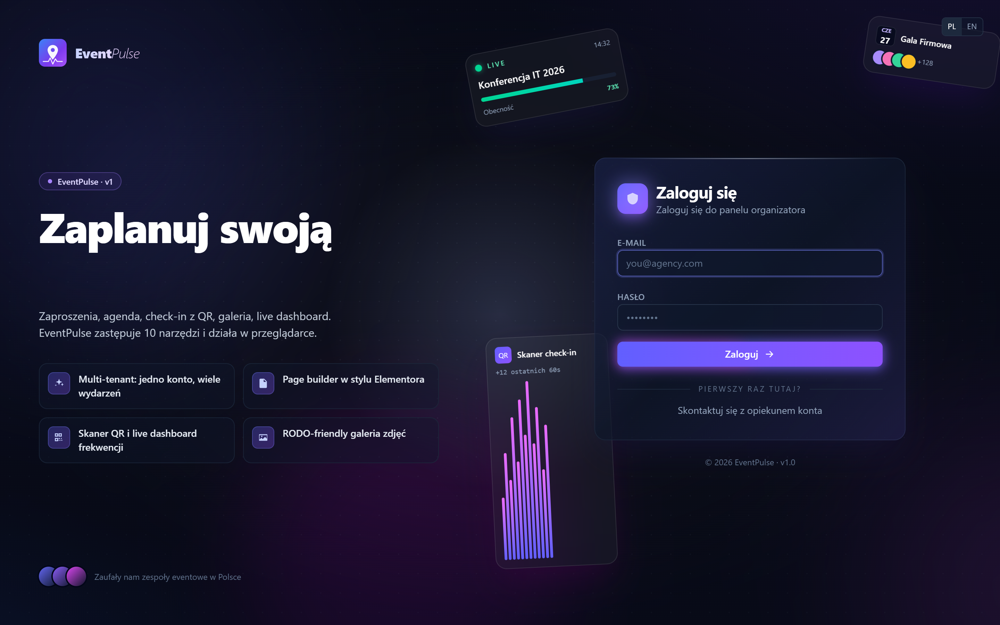
2
Lista wydarzeń
AgencyGET /api/events
- Po zalogowaniu widzisz wszystkie swoje wydarzenia jako kafelki ze statusem.
- Filtruj po statusie (Szkice / Opublikowane / Na żywo) lub wyszukaj po nazwie.
- Kliknij + Nowe wydarzenie, aby utworzyć kolejne; albo kliknij kafelek, aby otworzyć event.
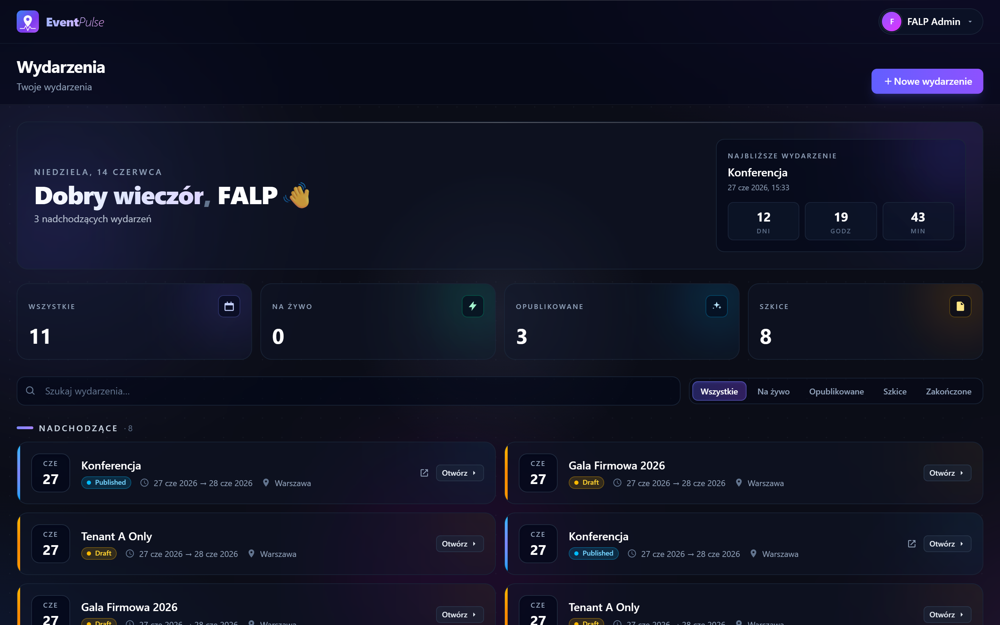
3
Dashboard wydarzenia
AgencyKlientGET /api/events/{id}/dashboard
- Otwórz wydarzenie — domyślnie pokazuje się Dashboard.
- U góry: odliczanie do startu, status, oraz akcje: Skaner QR, Link operatora, Pobierz raport PDF, Usuń wydarzenie.
- KPI: Obecni, Frekwencja, Potwierdzeni, Nieobecni — odświeżają się na żywo po każdym skanie.
- Lejek frekwencji i Aktywność na stanowiskach pokazują przebieg eventu w czasie rzeczywistym.
„Aktywność na żywo" i stacje aktualizują się przez SignalR — nie musisz odświeżać strony.
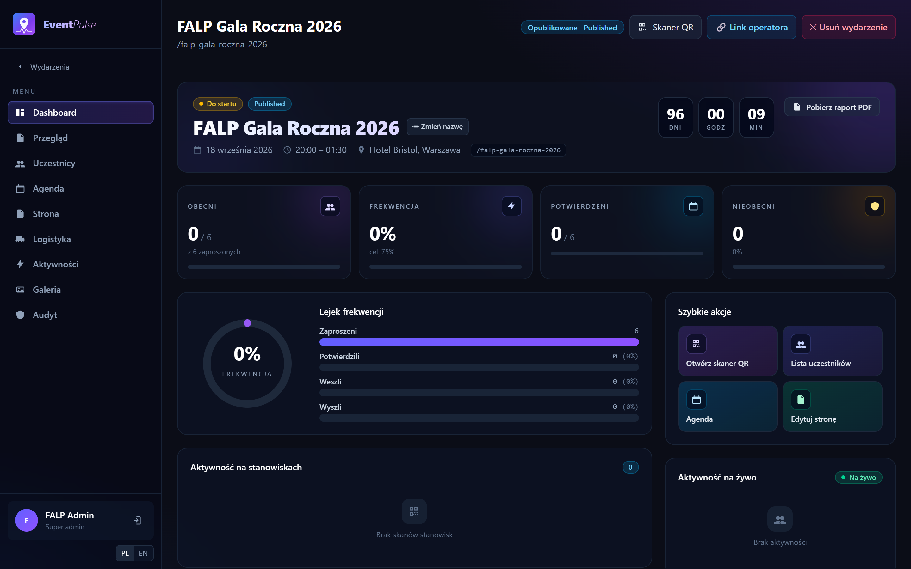
4
Uczestnicy — import, statusy, eksport
AgencyKlient/api/events/{id}/participants
- Zakładka Uczestnicy w menu po lewej.
- Pokaż import → wgraj plik Excel/CSV; zobaczysz podgląd z walidacją i duplikatami, potem zatwierdź.
- + Dodaj ręcznie dla pojedynczego gościa.
- Filtry statusu: Wszyscy / Invited / Confirmed / Checked-in / No-show.
- Wyślij zaproszenia — maile z linkiem i kodem QR. Eksport Excel pobiera pełną listę (16 kolumn).
- Kliknij gościa → panel z danymi, statusem, kodem QR i akcjami.
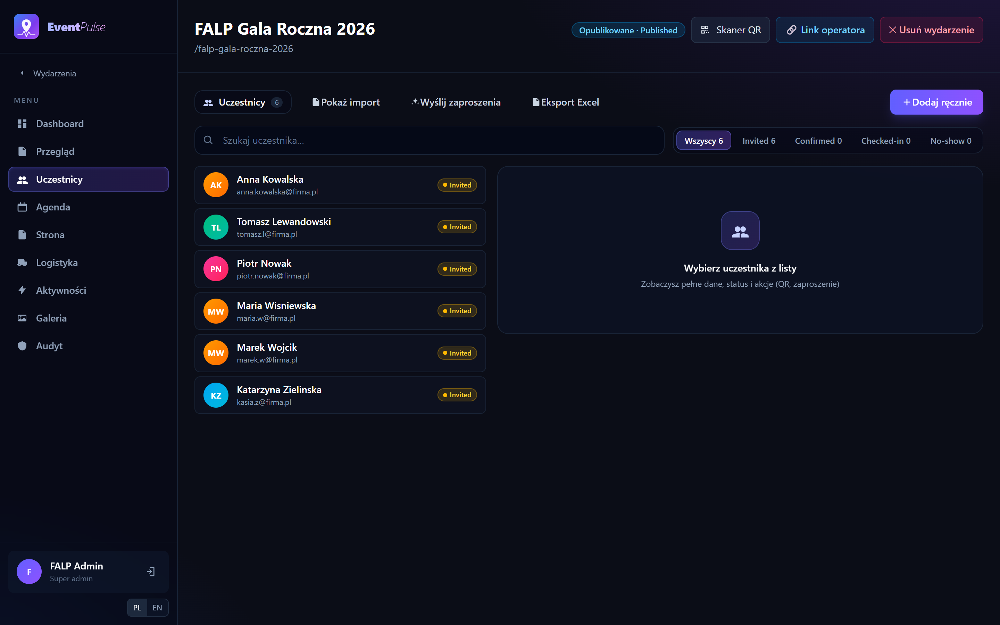
5
Agenda
Agency/api/events/{id}/agenda
- Zakładka Agenda.
- Dodaj punkt agendy — tytuł (PL/EN), czas, typ (prezentacja, posiłek, atrakcja…), opcjonalnie „wymaga skanu QR".
- Punkty pojawiają się w aplikacji uczestnika i na publicznej stronie.
Edycja punktu wysyła powiadomienie do uczestników (kolejka outbox → e-mail).
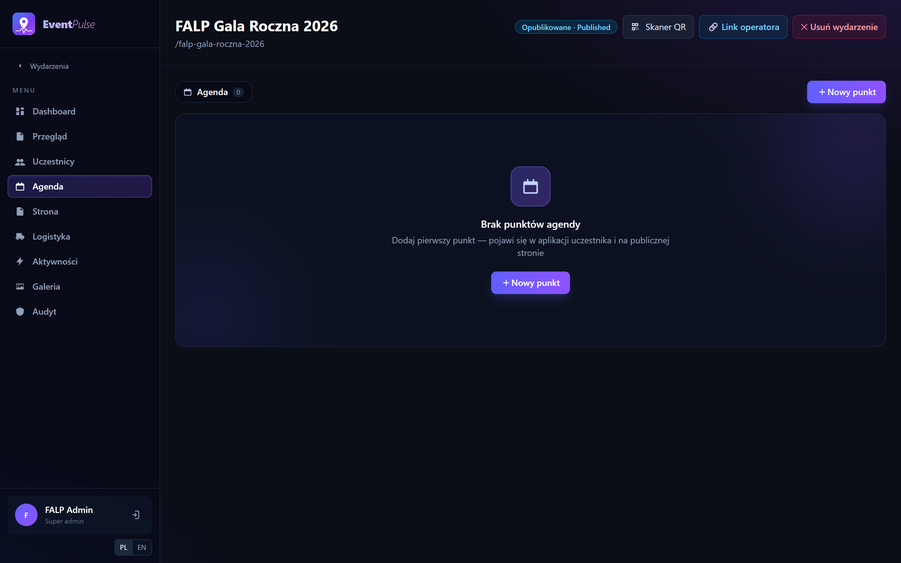
6
Kreator strony (Page Builder)
AgencyKlient/api/events/{id}/page
- Zakładka Strona.
- Przeciągnij bloki z palety po lewej (Sekcja powitalna, Opis, FAQ, Zespół, Galeria, Agenda, Mapa, Partnerzy, Odliczanie, Konkursy, Quizy…) na płótno.
- Kliknij blok, aby edytować treść; ustaw Branding (kolory, logo) i język.
- Zapisz wersję roboczą, potem Publikuj, żeby strona była widoczna publicznie.
Bloki „Konkursy" i „Quizy" zaciągają dane automatycznie z modułu Aktywności.
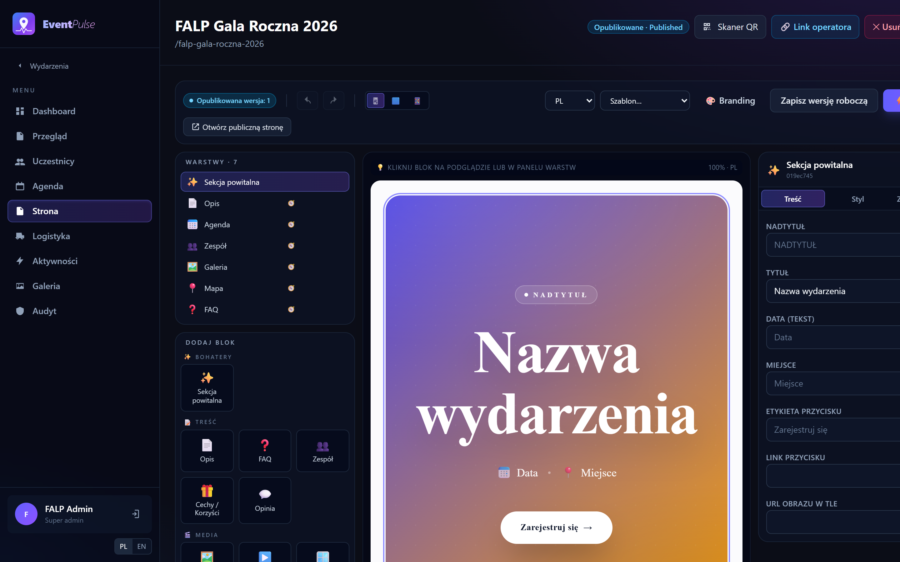
7
Quiz na żywo — panel prowadzącego (Kahoot)
AgencyKlient/api/…/quizzes/{id}/live
- Zakładka Aktywności → podzakładka Quizy → otwórz quiz.
- Dodaj pytania w zakładce Pytania w quizie.
- Przejdź do zakładki 🔴 Na żywo i kliknij Rozpocznij quiz — wszyscy uczestnicy zobaczą pytanie jednocześnie.
- Steruj: Następne pytanie → Pokaż odpowiedź (z rankingiem) → … → Zakończ.
Punktacja nagradza poprawność i szybkość (bonus maleje przez 20 s). Widzisz licznik odpowiedzi na żywo.
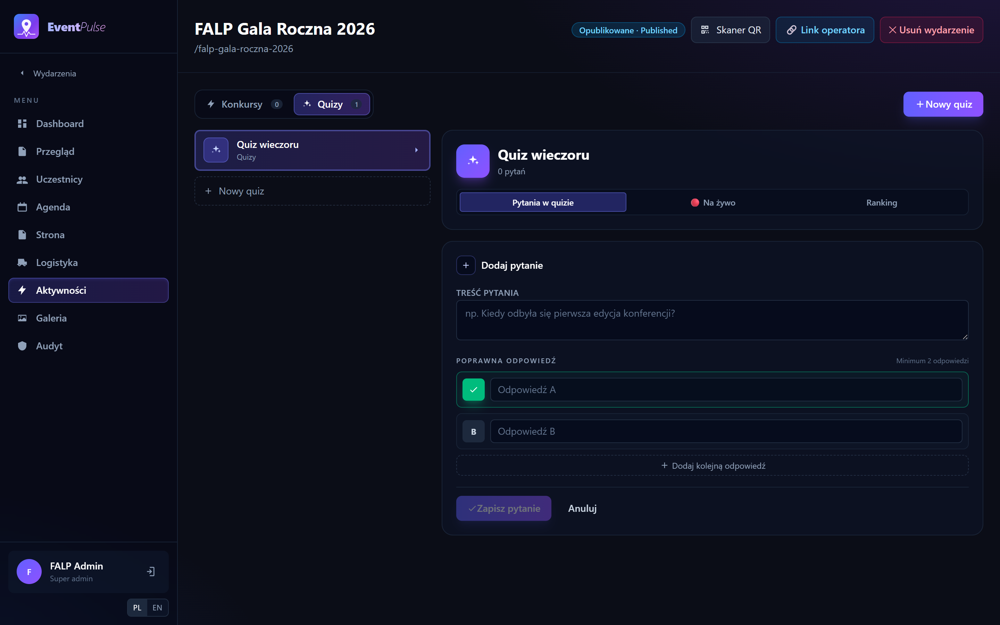
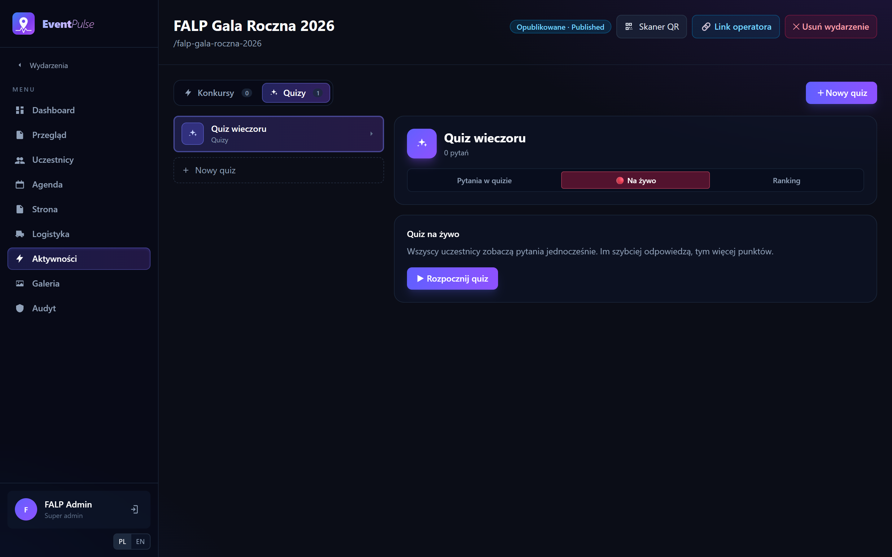
8
Logistyka · Galeria · Audyt
Agency
- Logistyka — pokoje, stoły, transfery i przypisania uczestników.
- Galeria — zdjęcia z eventu; uczestnik widzi je tylko jeśli wyraził zgodę RODO na wizerunek.
- Audyt — log wszystkich zmian w systemie (kto, co, kiedy). Tylko organizator.
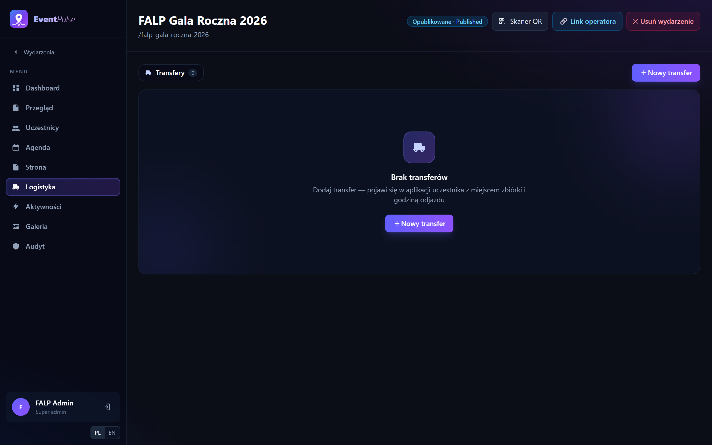
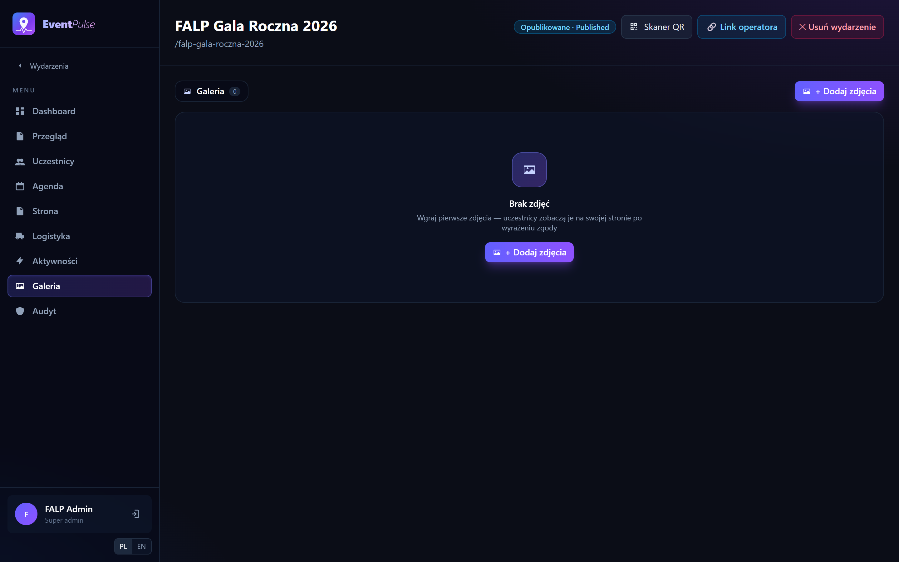
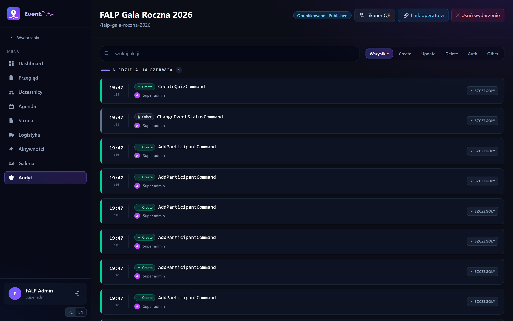
9
Wygenerowanie linku operatora
AgencyPOST /api/events/{id}/operator-link
- Otwórz wydarzenie i kliknij 🔗 Link operatora (prawy górny róg).
- System tworzy jednorazowy link ważny 24h, przypięty do tego eventu, i kopiuje go do schowka.
- Wyślij link hostessie / ochronie — otworzy skaner bez logowania do panelu.
Bezpieczeństwo: token operatora działa tylko dla tego jednego eventu i tylko dla skanera — nie da się z niego wejść do panelu administracyjnego.
🤝
Persona B — Klient
Mini-admin jednego wydarzenia. Widzi tylko swój event i skrócone menu.
1
Logowanie klienta i tryb klienta
KlientGET /api/events (scoped)
- Klient loguje się na tym samym ekranie /login.
- System pokazuje tylko jego wydarzenie — przy jednym evencie od razu przenosi na jego Dashboard.
- Menu jest skrócone (Dashboard, Przegląd, Strona, Uczestnicy, Galeria); Logistyka/Aktywności/Audyt są ukryte.
- W pasku widać oznaczenie „Tryb klienta".
Bezpieczeństwo: próba otwarcia cudzego eventu po adresie URL zwraca „nie znaleziono" — klient nie pozna nawet, że taki event istnieje. Nie może też tworzyć ani usuwać wydarzeń.
Wygląd ekranów jest identyczny jak u organizatora (te same zrzuty powyżej), różni się jedynie zakresem menu i danych.
🎫
Persona C — Uczestnik (mobile)
Gość wchodzi z linku w mailu. Aplikacja jest projektowana pod telefon.
1
Wejście z linku i bramka RODO
UczestnikPOST /api/auth/participant
- Gość klika link /p/{token} z maila (lub skanuje swój QR).
- Aplikacja loguje go automatycznie — bez hasła — i wita po imieniu.
- Najpierw musi zaakceptować zgody RODO: przetwarzanie danych (wymagane), wizerunek, widoczność dla innych.
- Kliknięcie Odblokuj aplikację odsłania pozostałe sekcje.
Sesja trwa długo i sama się odnawia — gość nie zostanie wylogowany w trakcie eventu.
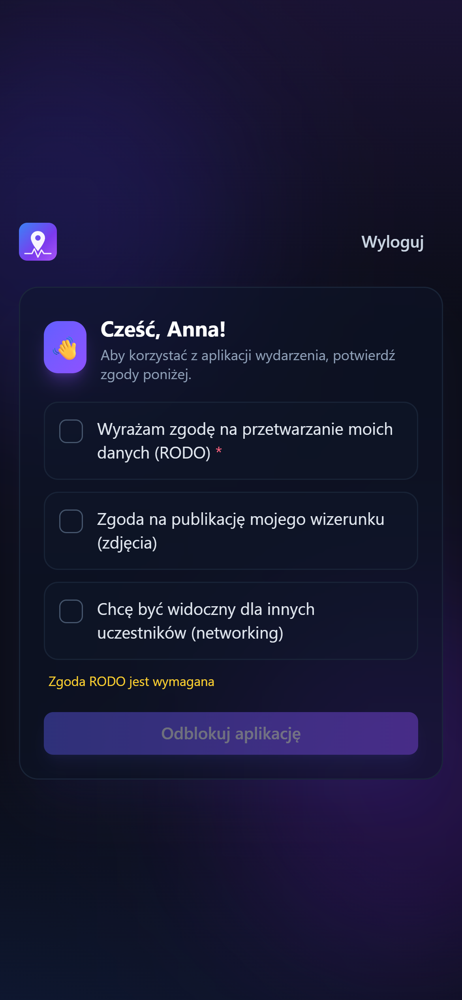
2
Sekcje aplikacji: agenda, Mój QR, preferencje, quizy
Uczestnik/api/me/…
- Dolna nawigacja: Agenda · Mój QR · Aktywności · Galeria · Profil.
- Mój QR — pełnoekranowy kod do pokazania na bramce (z opcją rozjaśnienia ekranu).
- Profil/Preferencje — język, dieta, koszulka, transfer, godzina przylotu, RSVP (potwierdź/rezygnuj).
- Aktywności — quizy (zwykłe i na żywo), konkursy, networking, skaner stanowisk.
- W quizie na żywo gość dotyka kolorowego kafla odpowiedzi; po „Pokaż odpowiedź" widzi wynik i ranking.
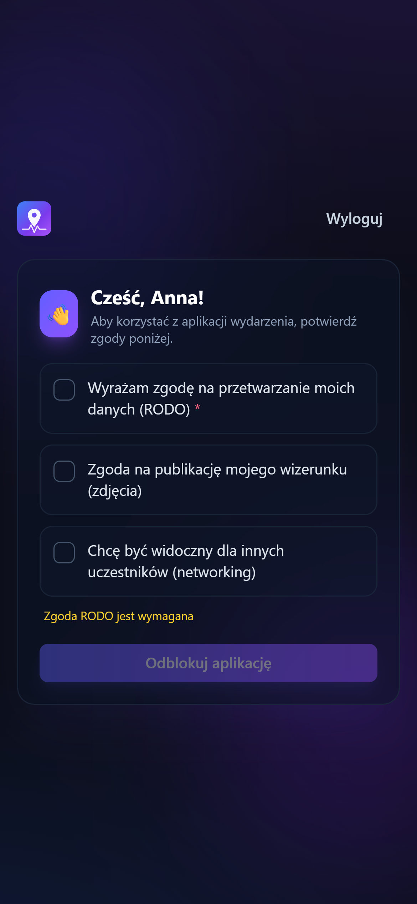
🔆
Persona D — Operator QR (mobile)
Hostessa / ochrona przy bramce. Tylko skaner, bez dostępu do panelu.
1
Wejście przez magic-link
Operator/op/{token}
- Operator otwiera link /op/{token} otrzymany od organizatora ([A-9] powyżej).
- Aplikacja sama loguje go jako operatora i przenosi do skanera tego eventu.
- Przy pierwszym uruchomieniu pojawia się krótki tutorial (3 ekrany): jak trzymać telefon, jak skanować szybko, co oznaczają kolory.
Zły lub wygasły link → ekran „Nie można otworzyć skanera". Operator nie ma dostępu do żadnego innego ekranu.
2
Wybór stanowiska
Operator
- Ekran „Gdzie skanujesz?" — wybierz stanowisko: Wejście, Bar, Sala główna, Konkurs lub + Inne….
- Wybór zapamiętuje się — skany będą przypisane do tego stanowiska na dashboardzie.
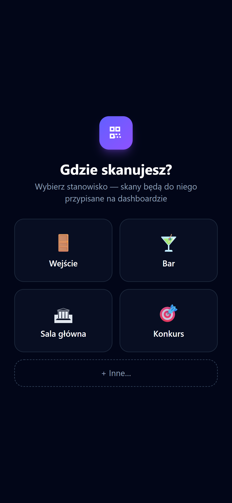
3
Skanowanie kodów
OperatorPOST /api/events/{id}/scans/batch
- Wybierz tryb Wejście / Wyjście (można zablokować kłódką, żeby nie przełączyć przez pomyłkę).
- Skieruj kamerę na kod QR gościa.
- Po skanie: zielony błysk + imię = wpuszczono; żółty = już był (z godziną); czerwony = nieznany kod. Plus dźwięk i wibracja.
- Licznik Zeskanowano i status Online/Offline u góry.
Działa offline — skany kolejkują się lokalnie i synchronizują po odzyskaniu sieci (bez duplikatów). Gdy kamera jest niedostępna, można wpisać kod ręcznie.
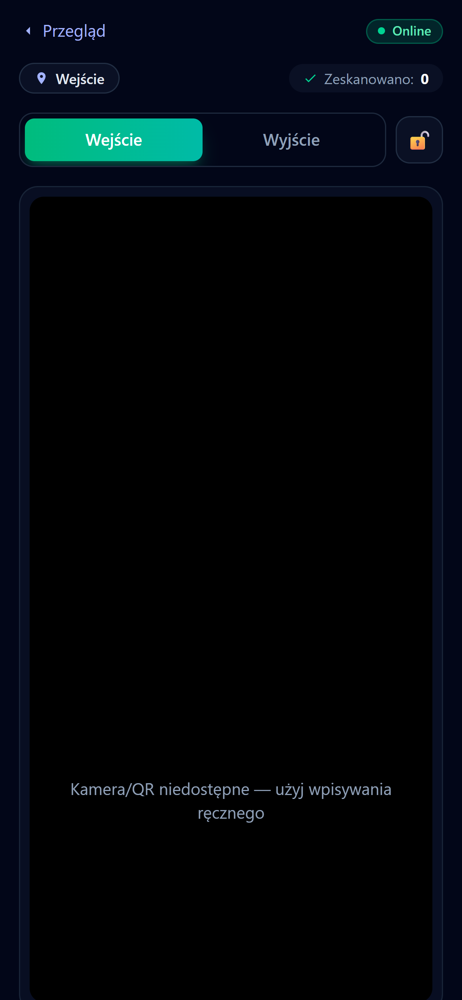
🌐
Persona E — Strona publiczna
Każdy, bez logowania. Strona zbudowana w kreatorze.
1
Publiczna strona wydarzenia
GET /api/public/events/{id}
- Adres /public/events/{id} — dostępny bez logowania.
- Renderuje bloki z kreatora: hero, opis, agenda, zespół, galeria, mapa, FAQ, sponsorzy, formularz RSVP, quizy/konkursy.
- Dopóki organizator nie kliknie Publikuj, goście widzą ekran „Strona jeszcze niepublikowana".
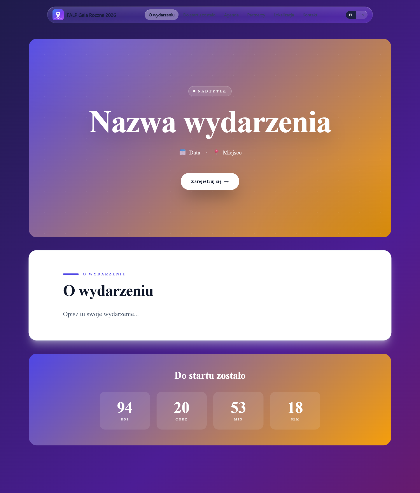
⚡
Ściąga / FAQ
Najczęstsze „jak zrobić…".
- Jak dodać uczestników masowo? Wydarzenie → Uczestnicy → Pokaż import → wgraj Excel → zatwierdź podgląd.
- Jak wysłać zaproszenia? Uczestnicy → Wyślij zaproszenia (mail z linkiem + QR).
- Jak dać hostessie skaner bez konta? Wydarzenie → Link operatora → wyślij skopiowany link.
- Jak uruchomić quiz na żywo? Aktywności → Quizy → otwórz quiz → Na żywo → Rozpocznij quiz.
- Jak opublikować stronę? Strona → ułóż bloki → Publikuj.
- Jak pobrać raport? Dashboard → Pobierz raport PDF; dane uczestników → Eksport Excel.
- Jak usunąć wydarzenie? Dashboard → Usuń wydarzenie (tylko organizator, operacja nieodwracalna).